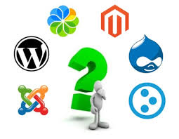

CUAL ES SON LAS 3 CMS MAS UTILIZADOS

WORDPRESS
Convertido en un potente CMS por derecho propio en las ultimas versiones y sin duda, el mas popular.
JOOMLA
Uno de los mas populares disponibles para medianos y grandes sitios que necesitan mas flexibilidad y caracteristicas.
DRUPAL
Muy solido, es conocido por su alta estabilidad y soportar alto trafico con muy pocos problemas. Es el mas dificil de instalar y configurar ya que se requiere conocimientos avanzados y experiencia tecnica.